Passo a passo
- Abrir a tela. Digite o endereço da tela (ela não está no menu). Abre com o título UTENSÍLIOS DE AMOSTRAGEM, o quadro Pesquisa (campo Pesquisa e lista Ativo com TODOS, SIM e NÃO), os botões PESQUISAR e LIMPAR e o link verde Incluir. A lista só aparece depois de PESQUISAR.
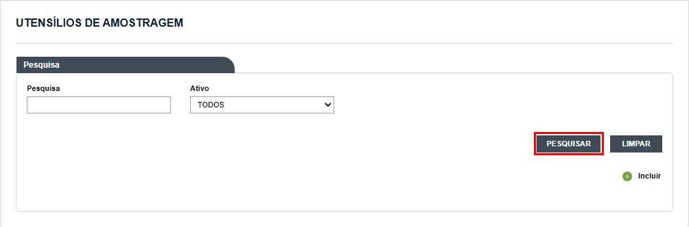
A imagem mostra a tela ao abrir: quadro Pesquisa, botões PESQUISAR e LIMPAR e o link Incluir; a lista não aparece. Depois de PESQUISAR:
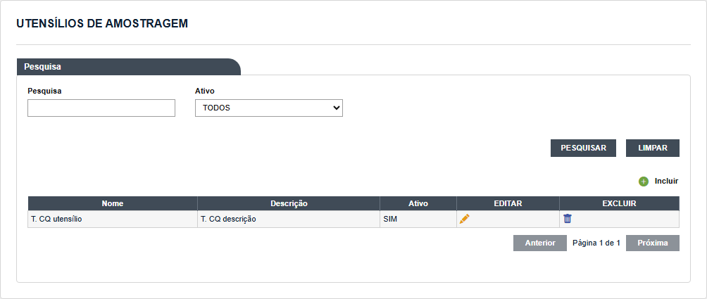
A imagem mostra a lista com as colunas Nome, Descrição e Ativo e os ícones de lápis e lixeira.
- Incluir. Clique em Incluir. Abre o quadro Dados com os campos abaixo e os botões SALVAR e VOLTAR. Tipo de Análise* e Item de Análise* são caixas de número digitadas à mão.

A imagem mostra o formulário em branco: Tipo de Análise*, Item de Análise*, Nome* e Descrição, com Ativo (Sim marcado), SALVAR e VOLTAR.
- Salvar vazio. Clique em SALVAR sem preencher. Nada acontece: não aparece mensagem de campo obrigatório nem faixa de aviso, e o formulário continua igual (DV-CQ-N-003). Também não acontece nada ao salvar só com o Nome preenchido (tipo e item vazios).
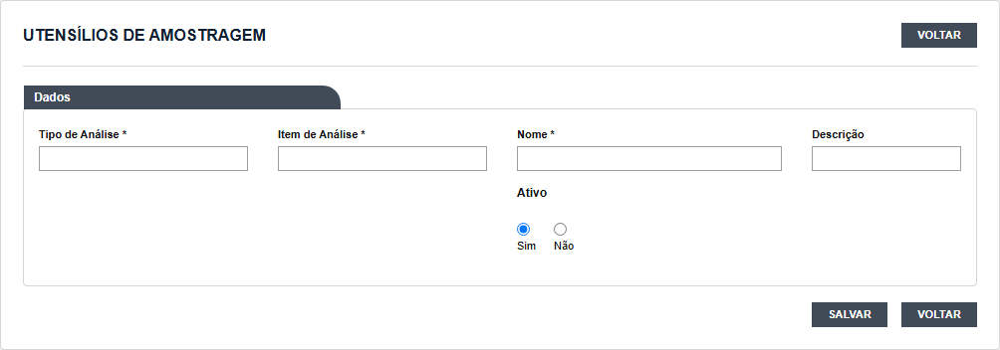
A imagem, tirada logo depois de clicar em SALVAR com tudo vazio, mostra o formulário em branco sem nenhuma mensagem. Os asteriscos (*) nos nomes dos campos são a única indicação de obrigatório.
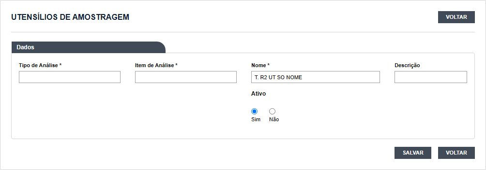
A imagem mostra o mesmo resultado ao salvar só com o Nome: nada acontece, sem mensagem.
- Preencher. Digite o Tipo de Análise (1), o Item de Análise (1), o Nome e a Descrição. O Nome aceita até 100 caracteres e a Descrição até 255 (a caixa para de aceitar; 100 e 255 gravam).
A imagem mostra os quatro campos preenchidos, com Ativo = Sim.
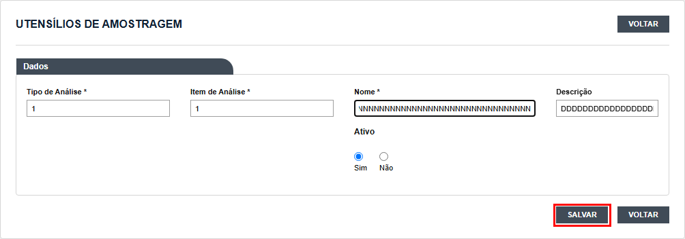
A imagem mostra o Nome com 100 caracteres e a Descrição com 255, que gravaram.
- Salvar. Clique em SALVAR. O registro é gravado e a tela volta aos filtros sem mensagem e sem confirmação (DV-CQ-N-002).

A imagem mostra a tela de filtros logo depois de salvar: nenhuma mensagem de sucesso e nenhuma confirmação.
- Ver o registro na lista. Clique em PESQUISAR. A lista mostra as colunas Nome, Descrição e Ativo e os ícones de Editar (lápis) e Excluir (lixeira), com paginação Anterior / Página 1 de 1 / Próxima (a paginação não foi testada com mais de uma página).
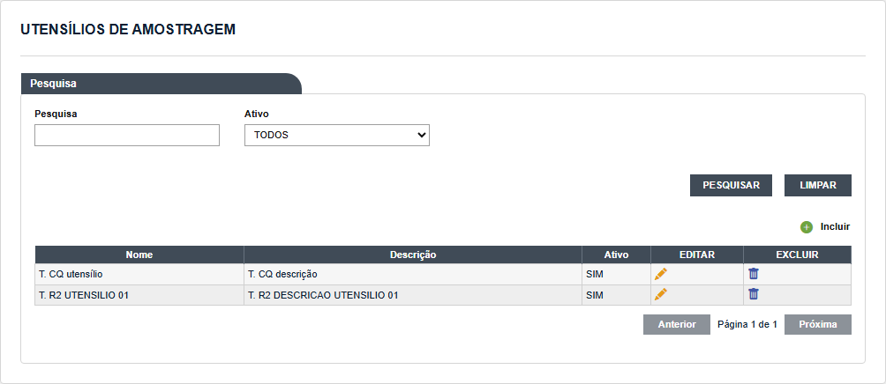
A imagem mostra o registro novo ao lado do que já existia, com Ativo = SIM.
- Editar. Na lista, clique no lápis. O formulário abre com os dados gravados. Altere o campo e clique em SALVAR. A alteração é gravada direto, sem pergunta de confirmação, sem pedir justificativa e sem mensagem; a tela volta aos filtros. Na edição também dá para inativar e reativar o registro (a lista mostra NÃO e depois SIM).
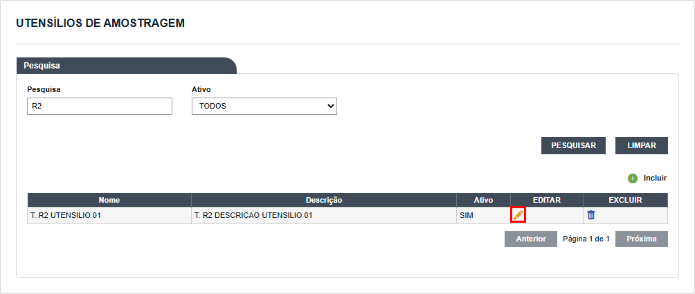
A imagem mostra a lista filtrada com o lápis marcado.
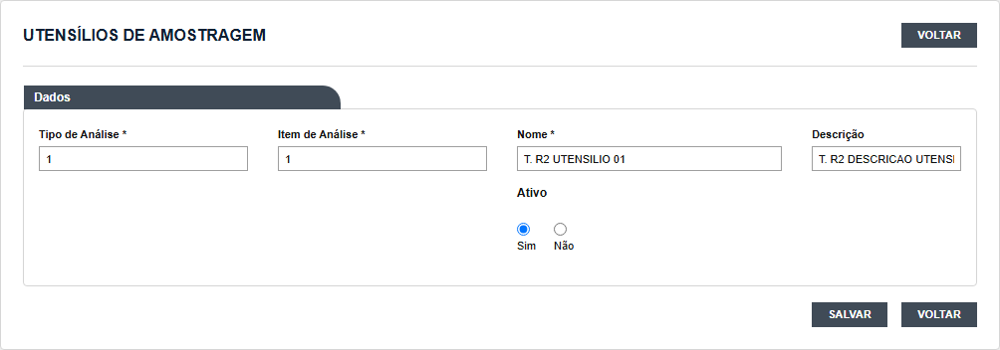
A imagem mostra o registro aberto com Tipo de Análise, Item de Análise, Nome e Descrição gravados.
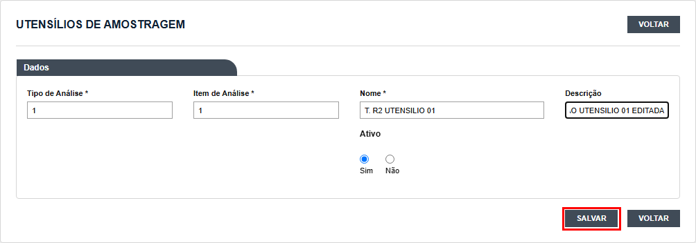
A imagem mostra a Descrição alterada, antes de clicar em SALVAR.

A imagem mostra a tela de filtros depois de salvar a edição: sem mensagem e sem confirmação.
- Incluir o mesmo registro duas vezes. O sistema aceita: nada impede o repetido (DV-CQ-N-003). O registro repetido foi gravado com outro número interno e a tela voltou aos filtros sem aviso.

A imagem mostra os mesmos dados do primeiro registro, prontos para salvar.
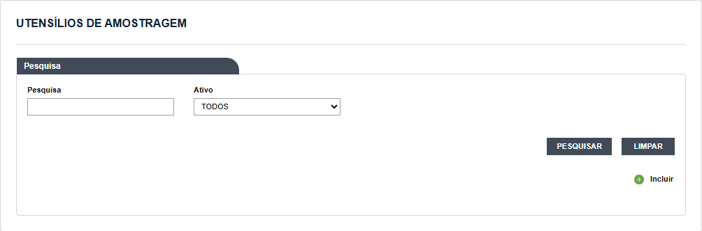
A imagem mostra a tela de filtros depois da segunda inclusão igual: sem recusa nem aviso.

A imagem mostra a lista com duas linhas de mesmo Nome.
- Excluir. Na lista, clique na lixeira. Aparece a caixa Confirmar exclusão com a pergunta "Deseja excluir este registro?" e os botões CANCELAR e CONFIRMAR. Não pede justificativa. CANCELAR mantém tudo como estava. Ao confirmar, o registro some da lista; não aparece mensagem de sucesso. A exclusão é lógica (a resposta do servidor traz campos de exclusão).
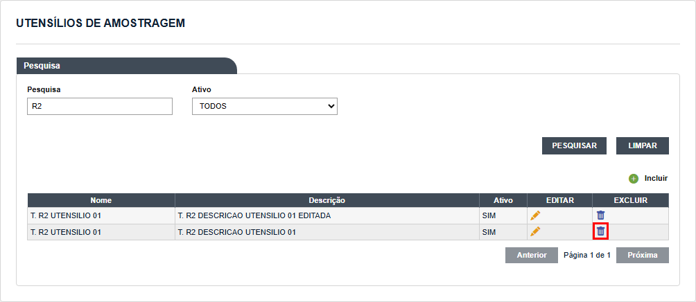
A imagem mostra a lista com a lixeira da segunda linha marcada.
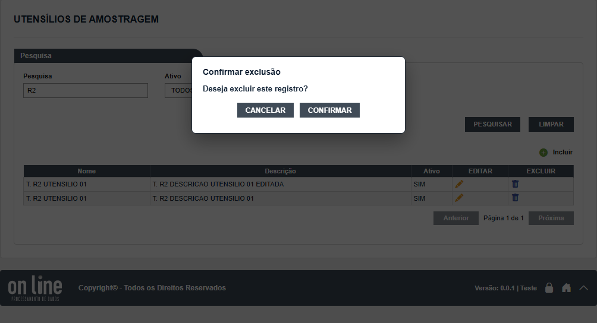
A imagem mostra a caixa "Confirmar exclusão", sem campo de justificativa.
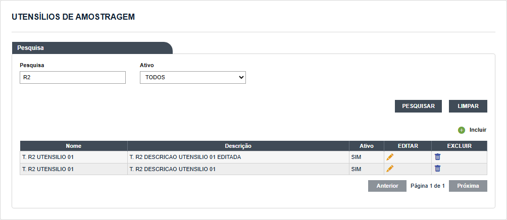
A imagem mostra a lista depois de CANCELAR: as duas linhas continuam.
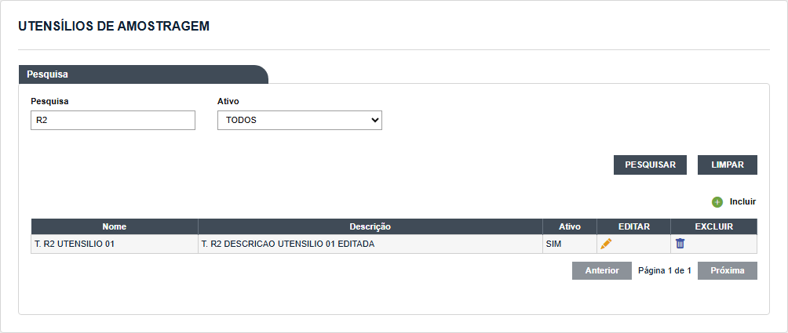
A imagem mostra a lista depois de CONFIRMAR: sobra uma linha, sem mensagem de sucesso.
-
Histórico. Não existe. A linha da lista só tem Editar e Excluir; não há botão de histórico (log) nesta tela (DV-CQ-N-003).
-
Pesquisar, filtrar e limpar. A Pesquisa procura só pelo Nome (sem diferenciar maiúsculas e no meio do texto); palavra que só está na Descrição não acha. Sem resultado aparece "A pesquisa não retornou nenhum resultado.". O filtro Ativo = NÃO mostra só os inativos. LIMPAR esvazia o campo, volta Ativo a TODOS e esvazia a lista.
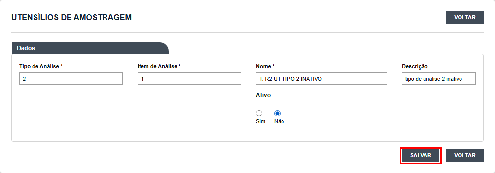
Inativo preenchido · clique para ampliar A imagem mostra o formulário com Ativo = Não marcado, antes de salvar.
Filtro Ativo igual a NÃO · clique para ampliar A imagem mostra o filtro Ativo = NÃO: só o registro inativo, com "NÃO" na coluna Ativo.
Pesquisa sem resultado · clique para ampliar A imagem mostra a mensagem "A pesquisa não retornou nenhum resultado." (o filtro Ativo ficou em SIM da pesquisa anterior).
Depois de LIMPAR · clique para ampliar A imagem mostra os filtros vazios (Ativo TODOS) e a lista vazia depois de LIMPAR.
-
Voltar. VOLTAR (no alto do formulário) volta aos filtros sem gravar.
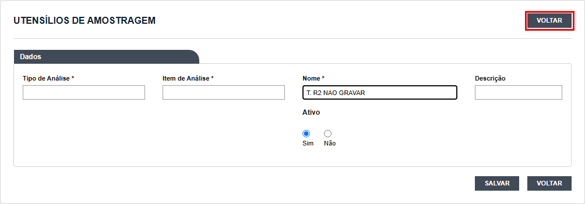
VOLTAR marcado · clique para ampliar A imagem mostra o formulário com um Nome digitado e o VOLTAR do alto marcado.
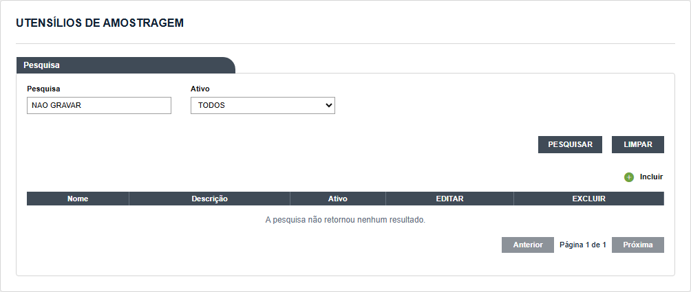
Depois de VOLTAR: nada gravado · clique para ampliar A imagem mostra que nada foi gravado: a pesquisa pelo nome digitado não acha nada.